5. [Cours]: Inleiding tot het Spring-framework
Trefwoorden: meerlaagse architectuur, Spring, afhankelijkheidsinjectie.
Spring verscheen in 2004, aanvankelijk als objectcontainer. Sindsdien heeft het zich op verschillende manieren verder ontwikkeld: Spring MVC, Spring Data, Spring Batch, ... [http://spring.io]. In dit hoofdstuk behandelen we alleen de objectcontainer. Hier volgen enkele belangrijke punten:
- Een applicatie bestaat uit meerdere klassen, waarvan sommige objecten delen die uniek moeten zijn (singletons). Spring maakt deze singletons aan en beheert ze;
- Spring plaatst deze singletons in een structuur die ‘context’ wordt genoemd;
- de klassen hebben toegang tot de singletons van de applicatie door ze bij Spring op te vragen via hun naam, hun type of beide;
- Spring maakt de singletons aan en beheert hun eventuele afhankelijkheden: een singleton kan namelijk verwijzingen hebben naar een of meer andere singletons. Wanneer Spring een singleton aanmaakt, maakt het ook de bijbehorende afhankelijkheden aan;
- wanneer een op Spring gebaseerde applicatie opstart, kan deze Spring vragen om alle singletons van de applicatie aan te maken. Deze zullen vervolgens beschikbaar zijn in de Spring-context;
- Spring vergemakkelijkt het gebruik van gelaagde architecturen en het programmeren via interfaces. In eenvoudige gevallen wordt elke laag geïmplementeerd door een singleton en implementeert deze een interface. Als de applicatie werkt met de interfaces van de lagen en niet met hun implementatieklassen, ontstaat er een schaalbare architectuur waarmee de implementatie van een laag kan worden gewijzigd zonder de andere te veranderen, dankzij de volgende twee kenmerken:
- de applicatie verkrijgt een verwijzing naar de laag via de naam ervan. Spring levert een verwijzing naar de klasse die de laag implementeert;
- de applicatie gebruikt deze verwijzing als die naar de interface van de laag en niet als die naar een klasse;
Singletons kunnen op drie manieren worden gedeclareerd, die onderling kunnen worden gecombineerd:
- in een XML-bestand,
- in een speciale configuratieklasse;
- met elke klasse met behulp van annotaties;
Hieronder presenteren we drie configuratievoorbeelden:
- [exemple-01]: gecentraliseerde configuratie in één enkel bestand XML;
- [exemple-02]: gecentraliseerde configuratie in één enkele Java-klasse;
- [exemple-03]: configuratie verdeeld over meerdere Java-klassen;
Het laatste voorbeeld, [exemple-04], richt zich op de Spring-configuratie van een gelaagde architectuur. Dit is het belangrijkste voorbeeld. Hiernaar zal voortdurend worden verwezen bij het configureren van de architecturen in dit document.
Deze vier voorbeelden leggen de basis voor wat volgt:
- Spring-configuratie en afhankelijkheidsinjectie;
- gebruik van Maven om de afhankelijkheden van een project te beheren;
- het gebruik van JUnit om projecten te testen;
5.1. Support
 | 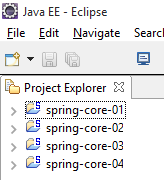 |
De map [support / chap-05] bevat de Eclipse-projecten van dit hoofdstuk.
5.2. Exemple-01
5.2.1. Het Eclipse-project
 |
5.2.2. De klasse [Personne]
 |
package istia.st.spring.core;
public class Personne {
// velden
private String nom;
private String prenom;
private int age;
// constructors
public Personne() {
}
public Personne(String nom, String prénom, int âge) {
this.nom = nom;
this.prenom = prénom;
this.age = âge;
}
// toString
public String toString() {
return String.format("Personne[%s, %s,%d]", prenom, nom, age);
}
// getters en setters
public String getNom() {
return nom;
}
public void setNom(String nom) {
this.nom = nom;
}
public String getPrenom() {
return prenom;
}
public void setPrenom(String prenom) {
this.prenom = prenom;
}
public int getAge() {
return age;
}
public void setAge(int age) {
this.age = age;
}
}
Opmerking: getters en setters kunnen als volgt automatisch worden gegenereerd: [1-2]:
 |
5.2.3. De klasse [Appartement]
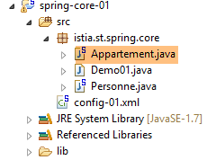 |
package istia.st.spring.core;
public class Appartement {
// velden
private Personne proprietaire;
private int surface;
// getters en setters
public Personne getProprietaire() {
return proprietaire;
}
public void setProprietaire(Personne proprietaire) {
this.proprietaire = proprietaire;
}
public int getSurface() {
return surface;
}
public void setSurface(int surface) {
this.surface = surface;
}
// toString
public String toString() {
return String.format("Appartement[%s, %s]", proprietaire, surface);
}
}
Opmerking: deze klasse heeft geen expliciete constructor. In dit geval bestaat er standaard altijd een constructor zonder parameters die niets doet. Wanneer er constructors worden aangemaakt, bestaat deze standaardconstructor niet langer impliciet. Deze moet dan expliciet worden gedefinieerd:
5.2.4. Het configuratiebestand van Spring
 |
<?xml version="1.0" encoding="UTF-8"?>
<beans xmlns="http://www.springframework.org/schema/beans" xmlns:xsi="http://www.w3.org/2001/XMLSchema-instance" xmlns:util="http://www.springframework.org/schema/util"
xsi:schemaLocation="http://www.springframework.org/schema/beans http://www.springframework.org/schema/beans/spring-beans-4.0.xsd
http://www.springframework.org/schema/utilhttp://www.springframework.org/schema/util/spring-util-4.0.xsd">
<!-- Persoon 01 -->
<bean id="personne_01" class="istia.st.spring.core.Personne">
<constructor-arg index="0" value="dubois" />
<constructor-arg index="1" value="paul" />
<constructor-arg index="2" value="34" />
</bean>
<!-- Persoon 02 -->
<bean id="personne_02" class="istia.st.spring.core.Personne">
<property name="nom" value="martin" />
<property name="prenom" value="micheline" />
<property name="age" value="18" />
</bean>
<!-- een lijst met personen -->
<util:list id="club">
<ref bean="personne_01" />
<ref bean="personne_02" />
</util:list>
<!-- een appartement -->
<bean id="appartement" class="istia.st.spring.core.Appartement">
<property name="surface" value="100" />
<property name="proprietaire" ref="personne_01" />
</bean>
</beans>
- regels 2, 27: de singletons worden gedefinieerd binnen een <beans>-tag;
- regels 6-10: elk singleton wordt gedefinieerd door een <bean>-tag;
- regel 6: [id] is de identificatiecode van het singleton. [class] is de volledige naam van de klasse die moet worden geïnstantieerd;
- regels 7-9: de drie waarden die moeten worden doorgegeven aan de constructor van de klasse [Personne];
- regels 12-16: de klasse [Personne] wordt eerst aangemaakt met de standaardconstructor [new Personne()]. Vervolgens wordt voor elke tag [property] een setter van de klasse gebruikt. Voor regel 13 wordt bijvoorbeeld de methode [setNom("martin")] uitgevoerd. De methode [setNom] moet dus bestaan. Dit is een belangrijk punt om te onthouden;
- regels 18-21: met de tag <util:list> kan een singleton worden gedefinieerd die een lijst is;
- regel 19: verwijst naar de singleton [personne_01] die op regel 6 is gedefinieerd. Dit is wat men een afhankelijkheidsinjectie noemt. Er zijn twee attributen die kunnen worden gebruikt om het veld van een singleton te initialiseren:
- [value]: om aan het veld een primitieve waarde toe te wijzen (tekenreeks, getal, datum, ...),
- [ref]: om aan het veld de referentie van een Spring-object toe te wijzen;
Opmerking: het Spring-configuratiebestand kan als volgt worden gegenereerd: [1-4]:
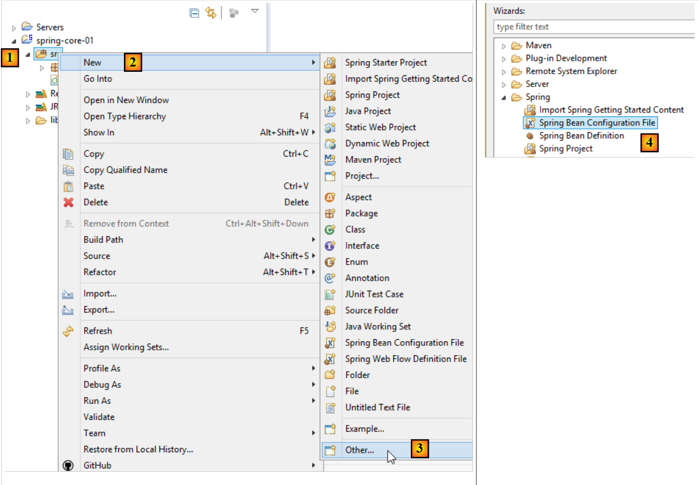 |
5.2.5. De uitvoerbare klasse
 |
package istia.st.spring.core;
import java.util.ArrayList;
import java.util.List;
import org.springframework.context.ApplicationContext;
import org.springframework.context.support.ClassPathXmlApplicationContext;
public class Demo01 {
@SuppressWarnings({ "unchecked", "resource" })
public static void main(String[] args) {
// het ophalen van de Spring-context
ApplicationContext ctx = new ClassPathXmlApplicationContext("config-01.xml");
// de beans worden opgehaald
Personne p01 = ctx.getBean("personne_01", Personne.class);
Personne p02 = ctx.getBean("personne_02", Personne.class);
List<Personne> club = ctx.getBean("club", new ArrayList<Personne>().getClass());
Appartement appart01 = ctx.getBean(Appartement.class);
// we geven ze weer
System.out.println("personnes--------");
System.out.println(p01);
System.out.println(p02);
System.out.println("club--------");
for (Personne p : club) {
System.out.println(p);
}
System.out.println("appartement--------");
System.out.println(appart01);
// de opgehaalde beans zijn singletons
// ze kunnen meerdere keren worden opgevraagd; er wordt altijd dezelfde bean opgehaald
Personne p01b = ctx.getBean("personne_01", Personne.class);
System.out.println(String.format("beans [p01,p01b] identiques ? %s", p01b == p01));
}
}
- regel 14: hiermee wordt de Spring-context aangemaakt. Alle singletons die in het bestand [config-01.xml] zijn gedefinieerd, worden vervolgens geïnstantieerd;
- regel 16: vraagt een referentie op voor het singleton met identificatiecode [personne_01] van het type [Personne]. Deze tweede parameter is optioneel, maar in dat geval ontvangt men een verwijzing naar het type [Object], die vervolgens moet worden omgezet naar het type [Personne];
- regel 19: we gebruiken niet de naam van de bean, maar alleen het type, omdat er slechts één singleton van het type [Appartement] is;
- regel 18: hier zijn zowel de identificatie als het type van de gewenste singleton gebruikt. De identificatie is overbodig, aangezien er slechts één singleton van het type [new ArrayList<Personne>().getClass()] bestaat;
- regels 32-33: laten zien dat als we meerdere keren hetzelfde singleton opvragen, we inderdaad altijd dezelfde referentie krijgen, wat aantoont dat we inderdaad te maken hebben met een singleton. Dit is belangrijk om te begrijpen;
Opmerking: een uitvoerbare klasse kan als volgt worden gegenereerd: [1-6]:
 |
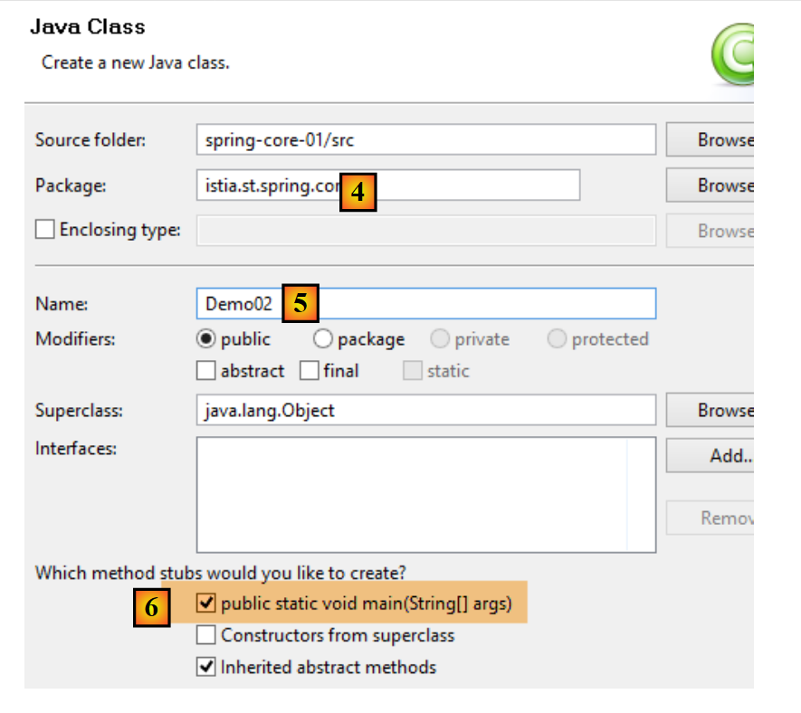 |
- door [6] aan te vinken, zal de gegenereerde klasse een statische methode [main] bevatten, waardoor deze uitvoerbaar wordt;
5.2.6. De afhankelijkheden van het project
 |
- Spring-afhankelijkheden: [spring-core, spring-beans, spring-context, spring-expression, commons-logging];
De afhankelijkheden worden als volgt aan het project toegevoegd:
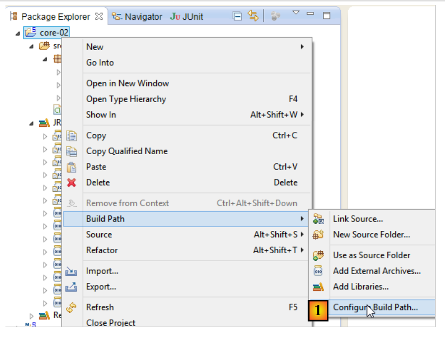 |
- in [1]: klik met de rechtermuisknop op het project / [Build Path] / [Configure Build Path];
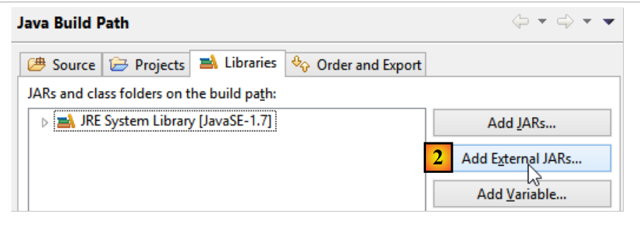 |
- in [2]: [Add JARs] als de toe te voegen JARs-bestanden zich in een map van het project bevinden. Anders [Add External JARs];
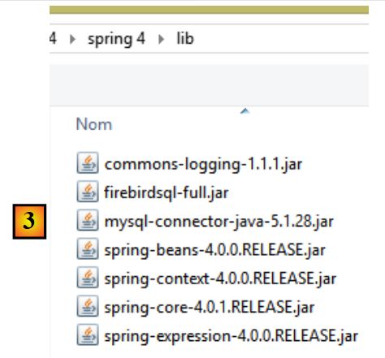 |
- naar [3], selecteer de JARs die moeten worden toegevoegd aan het ClassPath van het project (ze bevinden zich hier in de map [lib] binnen het project);
Definitie: het [ClassPath] van een project is de verzameling mappen die door het JVM (Java Virtual Machine) worden doorzocht om een klasse te vinden waarnaar door het project wordt verwezen. Voor een Eclipse-project bestaat de [ClassPath] uit de volgende elementen:
- de map [bin] van het project;
- de onderdelen van de [Build Path] van het project;
De map [bin] is de map die wordt gegenereerd door de compilatie van de map [src]. Alles wat dus in de map [src] wordt geplaatst, maakt automatisch deel uit van [ClassPath] (ook al is het geen .java-bestand). In het vorige project zal het Spring-configuratiebestand [config-01.xml], dat zich in de map [src] bevindt, dus bij de uitvoering deel uitmaken van de map [Classpath] van het project.
5.2.7. De resultaten
5.3. Exemple-02
5.3.1. Het Eclipse-project
 |
5.3.2. De configuratieklasse van Spring
package istia.st.spring.core;
import java.util.ArrayList;
import java.util.List;
import org.springframework.context.annotation.Bean;
import org.springframework.context.annotation.Configuration;
@Configuration
public class Config {
@Bean
public Personne personne_01() {
return new Personne("Paul", "Dubois", 34);
}
@Bean
public Personne personne_02() {
return new Personne("Martin", "Micheline", 18);
}
@Bean
public List<Personne> club(Personne personne_01, Personne personne_02) {
List<Personne> personnes = new ArrayList<Personne>();
personnes.add(personne_01);
personnes.add(personne_02);
return personnes;
}
@Bean
public Appartement appartement(Personne personne_01) {
Appartement appartement = new Appartement();
appartement.setSurface(200);
appartement.setPropriétaire(personne_01);
return appartement;
}
}
- regel 9: de annotatie [@Configuration] is een Spring-annotatie. Deze geeft aan dat de geannoteerde klasse singletons definieert. Deze worden gedefinieerd met behulp van de annotatie [@Bean]. Spring voert alle methoden uit die zijn geannoteerd met [@Bean]. Deze methoden creëren de singletons van de applicatie;
- regels 12-15: definieert een singleton die wordt geïdentificeerd door [personne_01], d.w.z. de naam van de methode.
- regel 23: de parameters [personne_01, personne_02] dragen de namen van singletons. Spring zal ze automatisch initialiseren met de verwijzingen naar deze singletons. Dit wordt parameterinjectie genoemd;
Deze manier om singletons te configureren is explicieter dan de manier waarbij het bestand XML wordt gebruikt. In feite bootsen we zelf na wat Spring impliciet deed op basis van het bestand XML.
5.3.3. De uitvoerbare klasse
 |
package istia.st.spring.core;
import java.util.ArrayList;
import java.util.List;
import org.springframework.context.annotation.AnnotationConfigApplicationContext;
public class Demo02 {
@SuppressWarnings({ "unchecked", "resource" })
public static void main(String[] args) {
// de Spring-context ophalen
AnnotationConfigApplicationContext ctx = new AnnotationConfigApplicationContext(Config.class);
// de beans worden opgehaald
Personne p01 = ctx.getBean("personne_01", Personne.class);
Personne p02 = ctx.getBean("personne_02", Personne.class);
List<Personne> club = ctx.getBean("club", new ArrayList<Personne>().getClass());
Appartement appart01 = ctx.getBean(Appartement.class);
// ze worden weergegeven
System.out.println("personnes--------");
System.out.println(p01);
System.out.println(p02);
System.out.println("club--------");
for (Personne p : club) {
System.out.println(p);
}
System.out.println("appartement--------");
System.out.println(appart01);
// de opgehaalde beans zijn singletons
// ze kunnen meerdere keren worden opgevraagd, maar er wordt altijd dezelfde bean opgehaald
Personne p01b = ctx.getBean("personne_01", Personne.class);
System.out.println(String.format("beans [p01,p01b] identiques ? %s", p01b == p01));
}
}
- op regel 13 worden alle beans geïnstantieerd die zijn gedefinieerd in de klasse [Config];
- de rest van de code blijft ongewijzigd;
5.3.4. De afhankelijkheden van het project
 |  |
De afhankelijkheden worden vastgelegd in het volgende bestand [pom.xml]:
<project xmlns="http://maven.apache.org/POM/4.0.0" xmlns:xsi="http://www.w3.org/2001/XMLSchema-instance"
xsi:schemaLocation="http://maven.apache.org/POM/4.0.0 http://maven.apache.org/xsd/maven-4.0.0.xsd">
<modelVersion>4.0.0</modelVersion>
<groupId>istia.st.spring.core</groupId>
<artifactId>spring-core-02</artifactId>
<version>0.0.1-SNAPSHOT</version>
<name>spring-core-02</name>
<description>Introduction à Spring</description>
<properties>
<project.build.sourceEncoding>UTF-8</project.build.sourceEncoding>
<java.version>1.7</java.version>
</properties>
<dependencies>
<!-- Spring -->
<dependency>
<groupId>org.springframework</groupId>
<artifactId>spring-context</artifactId>
<version>4.1.3.RELEASE</version>
</dependency>
</dependencies>
<!-- plugins -->
<build>
<plugins>
<plugin>
<artifactId>maven-assembly-plugin</artifactId>
<configuration>
<descriptorRefs>
<descriptorRef>jar-with-dependencies</descriptorRef>
</descriptorRefs>
</configuration>
</plugin>
<plugin>
<groupId>org.apache.maven.plugins</groupId>
<artifactId>maven-surefire-plugin</artifactId>
<version>2.18.1</version>
</plugin>
</plugins>
</build>
</project>
Het handmatig beheren van de afhankelijkheden van een project wordt een hele klus wanneer men Java-bibliotheken gebruikt waarvan men de afhankelijkheden niet kent. Zo heeft het framework [Hibernate], dat de toegang tot databases beheert, tientallen afhankelijkheden. Het project [Maven] lost dit probleem op. Je geeft de naam op van de afhankelijkheid die je nodig hebt. Deze wordt automatisch gezocht in Maven-repositories verspreid over het internet. Als de gevraagde afhankelijkheid zelf weer afhankelijkheden heeft, worden deze automatisch ook gedownload. Deze gedownloade afhankelijkheden worden opgeslagen in een lokale repository op de werkstation. Als een andere applicatie later dezelfde afhankelijkheid nodig heeft, wordt deze niet opnieuw gedownload, maar gezocht in de lokale repository. Een afhankelijkheid wordt gekenmerkt door de volgende elementen:
- regel 17: een <dependency>-tag;
- regel 18: een attribuut [groupId] dat doorgaans het bedrijf identificeert dat de afhankelijkheid heeft aangemaakt;
- regel 19: een attribuut [artifactId] dat de afhankelijkheid identificeert;
- regel 20: een attribuut [version] dat de gewenste versie identificeert;
Het genereren van het project zal zelf een Maven-component opleveren die wordt gedefinieerd door de regels 4-8:
- regels 4-6: de zojuist beschreven attributen [ groupId, artifactId,version];
- regels 7-8: zijn optionele attributen;
We zullen later nog terugkomen op de rol van de regels 24-40. Om een gewoon Eclipse-project om te zetten in een Maven-project, moet u twee dingen doen:
- het bovenstaande bestand [pom.xml] aanmaken;
- aangeven dat het project voortaan een Maven-project is [1-4]:
 |
Het pictogram van een Maven-project bevat een M [4]. De S geeft aan dat het project Spring-elementen bevat. Het wordt afgeraden om (zoals we zojuist hebben gedaan) een Eclipse-project om te zetten naar een Maven-project, omdat het project dan niet de structuur heeft die voor een Maven-project wordt verwacht, wat soms tot onverwachte problemen kan leiden.
5.3.5. Het genereren van het Maven-artefact van het project
We noemen het element dat wordt gedefinieerd door de regels 4-6 van het bestand [pom.xml] het Maven-artefact van het project:
<groupId>istia.st.spring.core</groupId>
<artifactId>spring-core-02</artifactId>
<version>0.0.1-SNAPSHOT</version>
Om dit artefact te genereren, moeten de volgende regels 3-7 aanwezig zijn in het bestand [pom.xml]:
<build>
<plugins>
<plugin>
<groupId>org.apache.maven.plugins</groupId>
<artifactId>maven-surefire-plugin</artifactId>
<version>2.18.1</version>
</plugin>
</plugins>
</build>
Deze regels definiëren de Maven-plugin die het projectartefact kan genereren. Vervolgens gaat men als volgt te werk:
 |
Het zo gegenereerde artefact wordt naar de lokale Maven-repository gekopieerd. De locatie hiervan is te vinden in de Eclipse-configuratie:
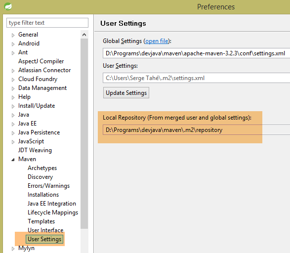 |
Vervolgens kan worden gecontroleerd of het Maven-artefact correct is geïnstalleerd:
 |
Vanaf nu kan een ander lokaal Maven-project gebruikmaken van dit archief.
5.4. Exemple-03
5.4.1. Het Eclipse-project
Deze keer maken we een Maven-project aan met de naam [1-8]:
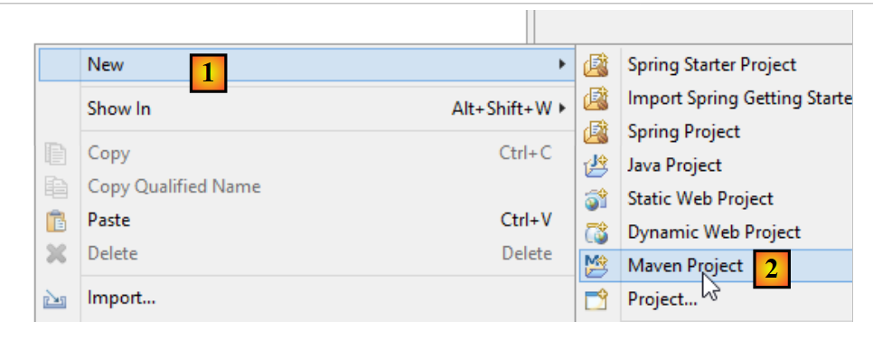 |
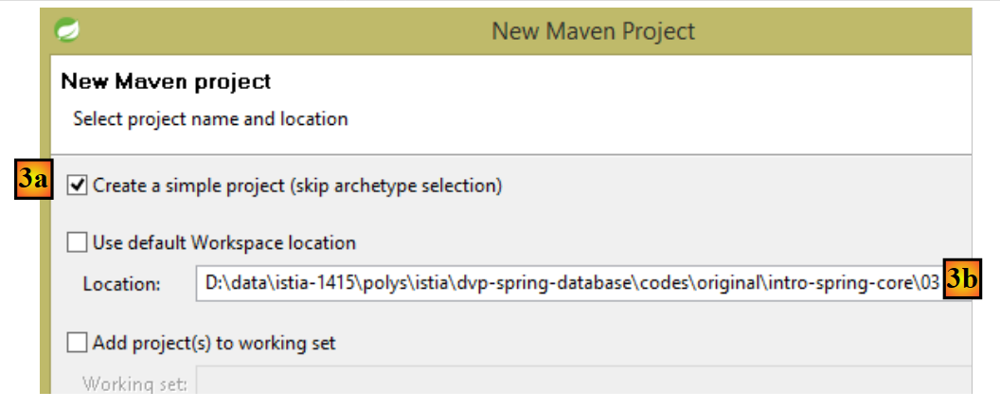 |
- in [3b]: geef een lege map op waar het project zal worden gegenereerd;
 |
- in [4]: de ID van de Maven-groep waartoe het project zal behoren;
- in [5]: de naam van het gegenereerde Maven-artefact;
- in [6]: de versie;
- in [7]: de verpakkingsmodus (er zijn ook war, ear, apk, ...);
- in [8]: het aldus aangemaakte project;
Een Maven-project heeft standaard een specifieke mapstructuur:
- [src / main / java]: de broncode van het project. De gecompileerde bestanden van deze broncode worden in de map [target/classes] van het project geplaatst;
- [src / main / resources]: de bronnen die in het classpath van het project moeten staan, zonder dat het Java-broncode betreft. Deze worden ongewijzigd gekopieerd naar de map [target/classes] van het project;
- [src / test / java]: de broncodes van de tests van het project. De gecompileerde bestanden van deze broncodes worden in de map [target/test-classes] van het project geplaatst. Deze elementen worden niet opgenomen in het Maven-archief van het project;
- [src / test / resources]: de bronnen die in het classpath van het project moeten staan voor de tests, zonder dat het om Java-broncodes gaat. Deze worden ongewijzigd gekopieerd naar de map [target/test-classes] van het project;
We vullen het project als volgt aan:
 |
5.4.2. De Maven-configuratie
Er wordt standaard een bestand [pom.xml] gegenereerd. We passen dit als volgt aan:
<project xmlns="http://maven.apache.org/POM/4.0.0" xmlns:xsi="http://www.w3.org/2001/XMLSchema-instance"
xsi:schemaLocation="http://maven.apache.org/POM/4.0.0 http://maven.apache.org/xsd/maven-4.0.0.xsd">
<modelVersion>4.0.0</modelVersion>
<groupId>istia.st.spring.core</groupId>
<artifactId>spring-core-03</artifactId>
<version>0.0.1-SNAPSHOT</version>
<name>spring-core-03</name>
<description>Introduction à Spring</description>
<properties>
<project.build.sourceEncoding>UTF-8</project.build.sourceEncoding>
<java.version>1.8</java.version>
</properties>
<!-- bovenliggend Maven-project -->
<parent>
<groupId>org.springframework.boot</groupId>
<artifactId>spring-boot-starter-parent</artifactId>
<version>1.2.3.RELEASE</version>
</parent>
<dependencies>
<!-- Spring Context -->
<dependency>
<groupId>org.springframework</groupId>
<artifactId>spring-context</artifactId>
</dependency>
<!-- logs -->
<dependency>
<groupId>org.springframework.boot</groupId>
<artifactId>spring-boot-starter-logging</artifactId>
</dependency>
</dependencies>
<!-- plugins -->
<build>
<plugins>
<!-- voor het genereren van het projectarchief met de bijbehorende afhankelijkheden -->
<plugin>
<artifactId>maven-assembly-plugin</artifactId>
<configuration>
<descriptorRefs>
<descriptorRef>jar-with-dependencies</descriptorRef>
</descriptorRefs>
</configuration>
</plugin>
<!-- voor het installeren van het projectartefact in de lokale Maven-repository -->
<plugin>
<groupId>org.apache.maven.plugins</groupId>
<artifactId>maven-surefire-plugin</artifactId>
<version>2.18.1</version>
</plugin>
</plugins>
</build>
</project>
- regel 11: het project is gecodeerd in UTF-8;
- regel 12: we gebruiken een JDK 1.8 om het project te compileren;
- regels 16-20: voor projecten die gebruikmaken van Spring-bibliotheken is het handig om een bovenliggend Maven-project te gebruiken met de naam [spring-boot-starter-parent]. Dit project definieert de versies van verschillende Spring-bibliotheken en die van hun afhankelijkheden. Hierdoor hoeven deze niet meer in de definitie van de afhankelijkheden te worden opgegeven. In de regels 24-27 wordt de gewenste versie van [spring-context] dus niet gespecificeerd. Dit is de versie die is gedefinieerd door het bovenliggende project [spring-boot-starter-parent]. Dankzij deze techniek hoeft u zich geen zorgen te maken over mogelijke versie-incompatibiliteiten tussen afhankelijkheden. De versies die door het bovenliggende project zijn gedefinieerd, zijn onderling compatibel;
- regels 29-32: Spring schrijft een aanzienlijke hoeveelheid informatie naar de console via een logbibliotheek. Deze wordt hier geïmporteerd;
- regels 40-47: een Maven-plugin waar we later op terugkomen;
- regels 50-52: de plug-in voor het genereren van het Maven-artefact van het project;
5.4.3. De configuratieklasse van Spring
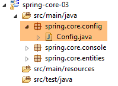 |
De klasse [Config] ziet er als volgt uit:
package istia.st.spring.core.config;
import istia.st.spring.core.entities.Personne;
import java.util.ArrayList;
import java.util.List;
import org.springframework.context.annotation.Bean;
import org.springframework.context.annotation.ComponentScan;
import org.springframework.context.annotation.Configuration;
@Configuration
@ComponentScan({ "spring.core.entities" })
public class Config {
@Bean
public Personne personne_01() {
return new Personne("Paul", "Dubois", 34);
}
@Bean
public Personne personne_02() {
return new Personne("Martin", "Micheline", 18);
}
@Bean
public List<Personne> club(Personne personne_01, Personne personne_02) {
List<Personne> personnes = new ArrayList<Personne>();
personnes.add(personne_01);
personnes.add(personne_02);
return personnes;
}
@Bean
public int mySurface() {
return 200;
}
}
- hier zien we code die al is uitgecommentarieerd, met twee nieuwe elementen:
- regel 13: geeft aan dat er nog andere beans moeten worden geïnstantieerd in het pakket [spring.core.entities],
- regels 34-37: een bean [mySurface];
5.4.4. De klasse [Appartement]
 |
package spring.core.entities;
import org.springframework.beans.factory.annotation.Autowired;
import org.springframework.beans.factory.annotation.Qualifier;
import org.springframework.stereotype.Component;
@Component
public class Appartement {
// door Spring geïnjecteerde velden
@Autowired
@Qualifier("personne_01")
private Personne propriétaire;
@Autowired
@Qualifier("mySurface")
private int surface;
// getters en setters
public Personne getPropriétaire() {
return propriétaire;
}
public void setPropriétaire(Personne propriétaire) {
this.propriétaire = propriétaire;
}
public int getSurface() {
return surface;
}
public void setSurface(int surface) {
this.surface = surface;
}
// toString
public String toString() {
return String.format("Appartement[%s, %s]", propriétaire, surface);
}
}
- regel 7: de annotatie [@Component] geeft aan Spring aan dat de klasse een singleton is die het framework moet instantiëren en beheren. Omdat we in de klasse [Config] [@ComponentScan({ "istia.st.spring.core.entities" })] hebben geschreven, zal deze singleton worden gevonden;
- regel 11: vraagt Spring om de referentie van een van de singletons in het veld te injecteren. Deze kan op twee manieren worden gedefinieerd:
- aan de hand van de ID (regels 12, 16),
- via het type, als er slechts één singleton van dat type is;
5.4.5. Uitvoering van het project
De uitvoering van het project levert het volgende resultaat op in de console:
- regels 1-3: Spring genereert een zeer groot aantal logberichten, tientallen regels. Deze logberichten kunnen zeer nuttig zijn bij het debuggen van een project dat niet werkt. Wanneer het project wel werkt, kunnen de logberichten als volgt worden beperkt:
 |
In de map [src / main / resources] wordt het volgende bestand [logback.xml] aangemaakt:
<configuration>
<appender name="STDOUT" class="ch.qos.logback.core.ConsoleAppender">
<!-- encoders krijgen standaard het type toegewezen
ch.qos.logback.classic.encoder.PatternLayoutEncoder -->
<encoder>
<pattern>%d{HH:mm:ss.SSS} [%thread] %-5level %logger{36} - %msg%n</pattern>
</encoder>
</appender>
<!-- logniveau-controle -->
<root level="info"> <!-- info, debug, warn -->
<appender-ref ref="STDOUT" />
</root>
</configuration>
- op regel 12 wordt het logniveau ingesteld. [debug] is een zeer gedetailleerd niveau, [info] veel minder;
Dit zijn de resultaten met [level=info]:
Er is nu nog maar één regel in de logbestanden.
5.4.6. Het projectarchief met de bijbehorende afhankelijkheden genereren
Het archief dat in het vorige project is aangemaakt, kan ook worden gebruikt door een Eclipse-project dat niet op Maven draait. Sommige projecten maken gebruik van talrijke bibliotheken en het kan lastig zijn om er geen over het hoofd te zien. Dit is waar Maven uitblinkt, want het volstaat om de afhankelijkheid op het hoogste niveau te vermelden, waarna de andere, op lagere niveaus, automatisch aan de Classpath van het project worden toegevoegd. Wanneer een niet-Maven Eclipse-project de archieven van een Maven-project moet gebruiken, is het mogelijk om het artefact van dat project met al zijn afhankelijkheden te genereren (wat in het vorige project niet het geval was). Voor deze generatie moeten de volgende regels 3-10 aanwezig zijn in het bestand [pom.xml]:
<build>
<plugins>
<plugin>
<artifactId>maven-assembly-plugin</artifactId>
<configuration>
<descriptorRefs>
<descriptorRef>jar-with-dependencies</descriptorRef>
</descriptorRefs>
</configuration>
</plugin>
<plugin>
<groupId>org.apache.maven.plugins</groupId>
<artifactId>maven-surefire-plugin</artifactId>
<version>2.18.1</version>
</plugin>
</plugins>
</build>
Deze regels definiëren de Maven-plugin die het projectartefact met alle afhankelijkheden kan genereren. Vervolgens gaat men als volgt te werk in [1-6]:
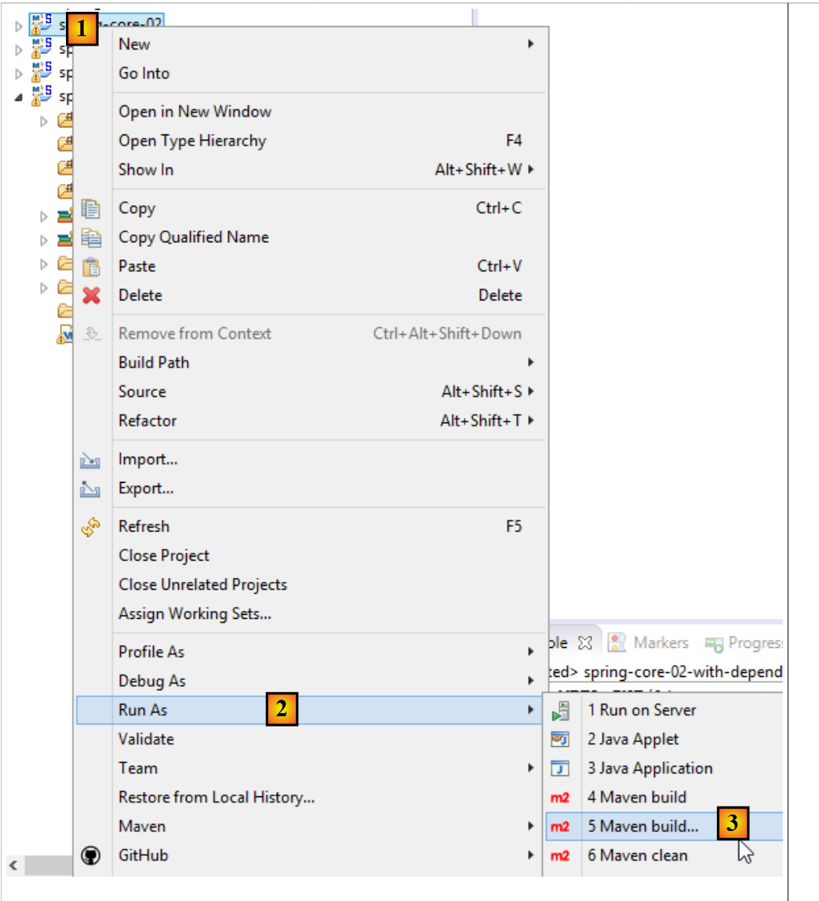 |
 |
- [4-6] vertegenwoordigt een Maven-uitvoeringsconfiguratie;
- in [4] een willekeurige naam invoeren;
- in [5] de projectmap aangeven;
- in [6] de Maven-doelen (goals) invoeren:
- [clean]: de projectmap [target] wordt verwijderd;
- [compile]: het project wordt gecompileerd. De compilatieresultaten worden in een opnieuw aangemaakte map [target] geplaatst;
- [assembly:single]: de klassen van het project en de bijbehorende afhankelijkheden worden in één enkel jar-archief in de map [target] geplaatst;
Na uitvoering krijgt men het volgende resultaat:
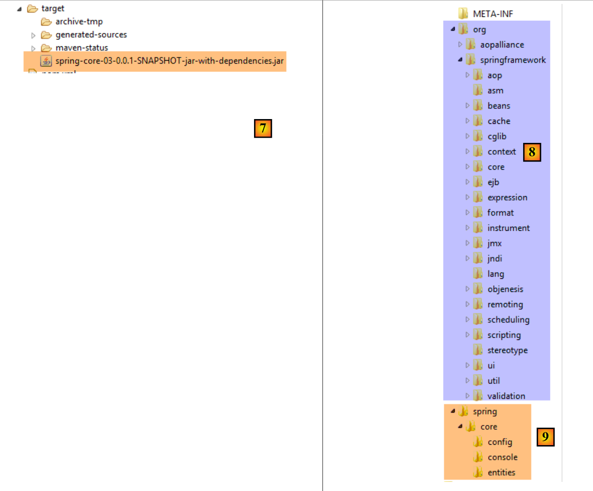 |
Een JAR-archief is een gecomprimeerd bestand dat dus met een decompressieprogramma kan worden geopend. Nadat het voorgaande archief is uitgepakt, krijgt men de volgende mapstructuur:
- in [8], de klassen van de afhankelijkheden van het project;
- in [9], de klassen van het project zelf;
5.5. Exemple-04
5.5.1. Doel
Dit voorbeeld is gebaseerd op een van de voorbeelden uit het document [Introduction à Spring IoC], waarin wordt getoond hoe Spring bijdraagt aan de configuratie van meerlaagse architecturen. In het oorspronkelijke document wordt het voorbeeld behandeld met een Spring-configuratie die is opgesteld in een bestand XML. Hier behandelen we het voorbeeld met een configuratie via Java-klassen en annotaties.
We willen hier een Spring-project configureren voor de volgende architectuur:
 |
Elke laag heeft een interface die door twee klassen wordt geïmplementeerd. We willen laten zien dat we dankzij Spring de implementatie van een laag kunnen wijzigen zonder dat dit invloed heeft op de code van de andere lagen.
5.5.2. Het Eclipse-project
5.5.2.1. Génération
We maken een nieuw type project aan:
 |
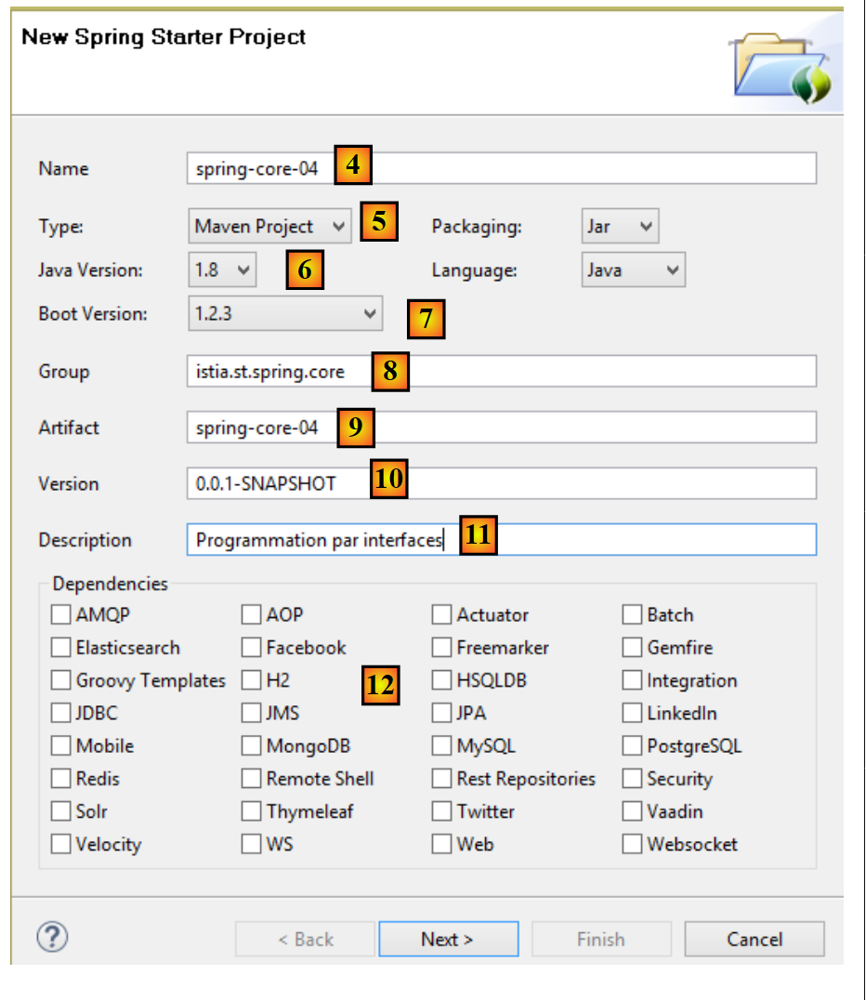 |
- in [4], voer de naam van het Eclipse-project in;
- in [5]: kies een Maven-project;
- in [6], kies een Java-versie >=1.7;
- in [7] de voorgestelde versie van Spring Boot kiezen;
- de gegevens in [8-11] zijn Maven-gegevens;
- in [12] kunt u een of meer van de voorgestelde afhankelijkheden selecteren. Dit heeft tot gevolg dat een aantal afhankelijkheden wordt opgenomen in het Maven-bestand [pom.xml];
 |
- in [13] een bestaande, lege map aanwijzen om het project in op te nemen;
- in [14], het gegenereerde project. We gaan de onderdelen hiervan nader bekijken;
Het project is een Maven-project dat is geconfigureerd door het volgende bestand [pom.xml]:
<?xml version="1.0" encoding="UTF-8"?>
<project xmlns="http://maven.apache.org/POM/4.0.0" xmlns:xsi="http://www.w3.org/2001/XMLSchema-instance"
xsi:schemaLocation="http://maven.apache.org/POM/4.0.0 http://maven.apache.org/xsd/maven-4.0.0.xsd">
<modelVersion>4.0.0</modelVersion>
<groupId>istia.st.spring.core</groupId>
<artifactId>spring-core-04</artifactId>
<version>0.0.1-SNAPSHOT</version>
<packaging>jar</packaging>
<name>spring-core-04</name>
<description>Programmation par interfaces</description>
<parent>
<groupId>org.springframework.boot</groupId>
<artifactId>spring-boot-starter-parent</artifactId>
<version>1.2.3.RELEASE</version>
<relativePath/> <!-- bovenliggende entiteit opzoeken in de repository -->
</parent>
<properties>
<project.build.sourceEncoding>UTF-8</project.build.sourceEncoding>
<start-class>demo.SpringCore04Application</start-class>
<java.version>1.8</java.version>
</properties>
<dependencies>
<dependency>
<groupId>org.springframework.boot</groupId>
<artifactId>spring-boot-starter</artifactId>
</dependency>
<dependency>
<groupId>org.springframework.boot</groupId>
<artifactId>spring-boot-starter-test</artifactId>
<scope>test</scope>
</dependency>
</dependencies>
<build>
<plugins>
<plugin>
<groupId>org.springframework.boot</groupId>
<artifactId>spring-boot-maven-plugin</artifactId>
</plugin>
</plugins>
</build>
</project>
- regels 6-12: bevatten de informatie die in de wizard voor het aanmaken van het project is ingevoerd;
- regels 14-19: het bovenliggende Maven-project dat een aantal bibliotheken met hun versies definieert. Als een van deze bibliotheken een afhankelijkheid van het project is, wordt deze in het bestand [pom.xml] vermeld zonder de bijbehorende versie;
- regel 23: deze regel is alleen van belang als men van plan is een uitvoerbaar archief van het project te genereren. Anders wordt deze regel niet gebruikt;
- regels 28-31: de minimale afhankelijkheid van een Spring Boot-project. Ter herinnering: we hebben geen afhankelijkheid geselecteerd in de keuzelijst;
- regels 33-37: de afhankelijkheid die nodig is voor het beheren van unit-tests JUnit [http://junit.org/] geïntegreerd met Spring. Regel 36 geeft aan dat de afhankelijkheid alleen nodig is voor de tests. Daarom wordt deze niet opgenomen in het projectarchief;
- regels 42-45: de plug-in waarmee het Maven-artefact van het project kan worden gegenereerd;
De lijst met afhankelijkheden die door dit bestand wordt meegebracht, is als volgt: [1]:
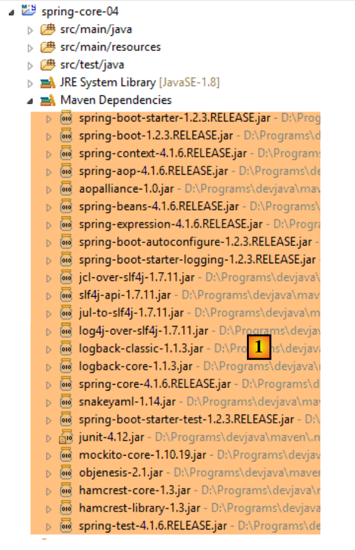 |
We zullen zien dat deze voldoende zijn voor wat we hier willen doen.
5.5.2.2. De uitvoerbare klasse
 |
De uitvoerbare klasse [SpringCore04Application] [[2] is als volgt:
package demo;
import org.springframework.boot.SpringApplication;
import org.springframework.boot.autoconfigure.SpringBootApplication;
@SpringBootApplication
public class SpringCore04Application {
public static void main(String[] args) {
SpringApplication.run(SpringCore04Application.class, args);
}
}
- regel 6: de annotatie [@SpringBootApplication] is een afkorting voor de drie annotaties [@Configuration, @EnableAutoConfiguration, @ComponentScan], wat betekent:
- dat de klasse [SpringCore04Application] een Spring-configuratieklasse is;
- dat Spring Boot wordt gevraagd om configuraties uit te voeren op basis van de klassen die het in het classpath van het project aantreft, dus in dit geval in de Maven-afhankelijkheden;
- de huidige map (die van de klasse [SpringCore04Application]) te doorzoeken op eventuele andere Spring-componenten;
- regel 10: de statische methode [SpringApplication.run] wordt uitgevoerd. De eerste parameter is een Spring-configuratieklasse, in dit geval de klasse [SpringCore04Application]. De tweede parameter is hier de lijst met argumenten die zijn doorgegeven aan de methode [main] (regel 9). De statische methode [SpringApplication.run] heeft als taak de Spring-context aan te maken, d.w.z. de verschillende beans aan te maken die worden gevonden in de configuratieklassen of in de mappen die worden doorzocht door de annotatie [@ComponentScan]. De methode [main] doet hier verder niets. Om deze methode wat meer inhoud te geven, gaan we deze als volgt aanpassen:
package demo;
import org.springframework.boot.SpringApplication;
import org.springframework.boot.autoconfigure.SpringBootApplication;
import org.springframework.context.ConfigurableApplicationContext;
@SpringBootApplication
public class SpringCore04Application {
public static void main(String[] args) {
// instantiëren van de Spring-context
ConfigurableApplicationContext context = SpringApplication.run(SpringCore04Application.class, args);
// weergave van de context
System.out.println("---------------- Liste des beans Spring");
for (String beanName : context.getBeanDefinitionNames()) {
System.out.println(beanName);
}
// context afsluiten
context.close();
}
}
- regel 12: de statische methode [SpringApplication.run] retourneert de Spring-context die ze heeft aangemaakt;
- regels 15-17: we geven de naam weer van alle beans in deze context;
We kunnen de applicatie als volgt uitvoeren: [1-3]. De gebruikelijke methode [Run As Java Application] is ook geldig.
 |
Het volgende resultaat wordt verkregen:
- regels 14-28: de beans van de Spring-context. We weten niet wat hun rol is. We zien de bean [springCore04Application] op regel 18, die door zijn annotatie [@SpringBootApplication] automatisch een Spring-bean wordt;
- de overige regels zijn Spring-logs van niveau [INFO]. Zoals we al hebben gezien, kunnen deze logs worden beheerd via het bestand [logback.xml] dat in de classpath van het project is geplaatst:
 |
<configuration>
<appender name="STDOUT" class="ch.qos.logback.core.ConsoleAppender">
<!-- encoders krijgen standaard het type toegewezen
ch.qos.logback.classic.encoder.PatternLayoutEncoder -->
<encoder>
<pattern>%d{HH:mm:ss.SSS} [%thread] %-5level %logger{36} - %msg%n</pattern>
</encoder>
</appender>
<!-- logniveau controleren -->
<root level="warn"> <!-- info, debug, warn -->
<appender-ref ref="STDOUT" />
</root>
</configuration>
Als we in regel 12 hierboven het niveau [warn] in plaats van [info] invoeren, krijgen we het volgende resultaat:
De logbestanden zijn verdwenen. Er verschijnen alleen berichten van niveau [warn] en die waren er hier niet.
5.5.3. Implementatie van de verschillende lagen van de architectuur
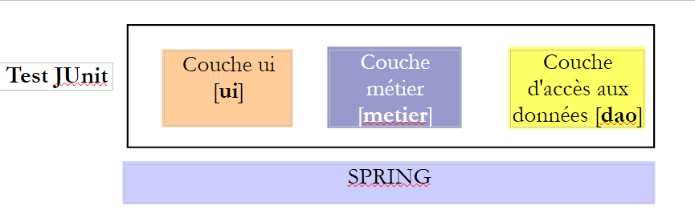 |
We gaan nu de drie lagen van de bovenstaande architectuur implementeren:
 |
De laag [DAO] wordt geïmplementeerd door het pakket [spring.core.dao]. Deze laag heeft de volgende interface [IDao]:
package spring.core.dao;
public interface IDao {
public int doSomethingInDaoLayer(int a, int b);
}
Deze interface heeft twee implementaties: [Dao1] en [Dao2]:
package spring.core.dao;
public class Dao1 implements IDao {
public int doSomethingInDaoLayer(int a, int b) {
return a+b;
}
}
package spring.core.dao;
public class Dao2 implements IDao {
public int doSomethingInDaoLayer(int a, int b) {
return a-b;
}
}
De laag [métier] wordt geïmplementeerd door het pakket [spring.core.metier]. Deze laag heeft de volgende interface [IMetier]:
package spring.core.metier;
public interface IMetier {
public int doSomethingInMetierLayer(int a, int b);
}
Deze interface heeft twee implementaties: [Metier1] en [Metier2]:
package spring.core.metier;
import spring.core.dao.IDao;
public class Metier1 implements IMetier {
private IDao dao;
public int doSomethingInMetierLayer(int a, int b) {
a++;
b++;
return dao.doSomethingInDaoLayer(a, b);
}
public void setDao(IDao dao) {
this.dao = dao;
}
}
package spring.core.metier;
import spring.core.dao.IDao;
public class Metier2 implements IMetier {
private IDao dao;
public int doSomethingInMetierLayer(int a, int b) {
a--;
b++;
return dao.doSomethingInDaoLayer(a, b);
}
public void setDao(IDao dao) {
this.dao = dao;
}
}
De laag [UI] wordt geïmplementeerd door het pakket [spring.core.ui]. Deze laag heeft de volgende interface [IUi]:
package spring.core.ui;
public interface IUi {
public int doSomethingInUiLayer(int a, int b);
}
Deze interface heeft twee implementaties: [Ui1] en [Ui2]:
package spring.core.ui;
import spring.core.metier.IMetier;
public class Ui1 implements IUi {
private IMetier metier;
public int doSomethingInUiLayer(int a, int b) {
a++;
b++;
return metier.doSomethingInMetierLayer(a, b);
}
public void setMetier(IMetier metier) {
this.metier = metier;
}
}
package spring.core.ui;
import spring.core.metier.IMetier;
public class Ui2 implements IUi {
private IMetier metier;
public int doSomethingInUiLayer(int a, int b) {
a--;
b++;
return metier.doSomethingInMetierLayer(a, b);
}
public void setMetier(IMetier metier) {
this.metier = metier;
}
}
5.5.4. Configuratie van het Spring-project
 |
De configuratieklasse [Config] ziet er als volgt uit:
package spring.core.config;
import org.springframework.context.annotation.Bean;
import org.springframework.context.annotation.Configuration;
import spring.core.dao.Dao1;
import spring.core.dao.Dao2;
import spring.core.dao.IDao;
import spring.core.metier.IMetier;
import spring.core.metier.Metier1;
import spring.core.metier.Metier2;
import spring.core.ui.IUi;
import spring.core.ui.Ui1;
import spring.core.ui.Ui2;
@Configuration
public class Config {
// -------------- implementatie [Ui1, Metier1, Dao1]
@Bean
public IDao dao1() {
return new Dao1();
}
@Bean
public IMetier metier1(IDao dao1) {
Metier1 metier = new Metier1();
metier.setDao(dao1);
return metier;
}
@Bean
public IUi ui1(IMetier metier1) {
Ui1 ui = new Ui1();
ui.setMetier(metier1);
return ui;
}
// -------------- implementatie [Ui2, Metier2, Dao2]
@Bean
public IDao dao2() {
return new Dao2();
}
@Bean
public IMetier metier2(IDao dao2) {
Metier2 metier = new Metier2();
metier.setDao(dao2);
return metier;
}
@Bean
public IUi ui2(IMetier metier2) {
Ui2 ui = new Ui2();
ui.setMetier(metier2);
return ui;
}
}
- regels 20-23: de bean met de naam [dao1] (naam van de methode) is een instantie van de klasse [Dao1] (regel 22), die wordt beschouwd als een implementatie van de interface [IDao] (regel 21). De bean [dao1] wordt dus gezien als een instantie van een interface (de terminologie is onjuist, maar het is wel begrijpelijk) en niet als een instantie van een klasse. Dit is een belangrijk punt om te begrijpen. Alle andere beans zullen eveneens instanties van interfaces zijn;
- regels 25-30: een instantie van de interface [IMetier], geïmplementeerd door de klasse [Metier1];
- regels 32-37: een instantie van de interface [IUi], geïmplementeerd door de klasse [Ui1];
- regels 20-37: implementeren de lagen [UI, Metier, DAO] met instanties van [Ui1, Metier1, Dao1];
- regels 40-57: implementeren de lagen [UI, Metier, DAO] met instanties van [Ui2, Metier2, Dao2];
5.5.5. Unit-test [JUnitTest]
 |
De klasse [JUnitTest] wordt in de tak [src / test / java] van het Maven-project geplaatst. De elementen van deze tak worden niet in het uiteindelijke archief van het project opgenomen. De code ervan is als volgt:
package spring.core.tests;
import org.junit.Assert;
import org.junit.Test;
import org.junit.runner.RunWith;
import org.springframework.beans.factory.annotation.Autowired;
import org.springframework.beans.factory.annotation.Qualifier;
import org.springframework.boot.test.SpringApplicationConfiguration;
import org.springframework.test.context.junit4.SpringJUnit4ClassRunner;
import spring.core.config.Config;
import spring.core.dao.IDao;
import spring.core.metier.IMetier;
import spring.core.ui.IUi;
@SpringApplicationConfiguration(classes = { Config.class })
@RunWith(SpringJUnit4ClassRunner.class)
public class JUnitTest {
...
}
- regel 16: de annotatie [@SpringApplicationConfiguration] is een annotatie van het Spring Boot Test-project (regel 8). Deze wordt meegebracht door de volgende afhankelijkheid van het bestand [pom.xml]:
<dependency>
<groupId>org.springframework.boot</groupId>
<artifactId>spring-boot-starter</artifactId>
</dependency>
Deze annotatie heeft als parameter de lijst met configuratieklassen die moeten worden gebruikt om de Spring-context op te bouwen die nodig is voor de test. Hier gebruiken we de configuratieklasse [Config] die al eerder is gepresenteerd;
- regel 17: de annotatie [@RunWith] is een annotatie van JUnit (regel 5). De parameter ervan is de klasse die verantwoordelijk is voor het uitvoeren van de tests in plaats van de standaardklasse van het JUnit-framework. Deze klasse is een Spring-klasse (regel 9). Deze zal de Spring-annotaties gebruiken die in de testklasse aanwezig zijn;
De volledige klasse ziet er als volgt uit
...
@SpringApplicationConfiguration(classes = { Config.class })
@RunWith(SpringJUnit4ClassRunner.class)
public class JUnitTest {
// laag [UI]
@Autowired
@Qualifier("ui1")
private IUi ui1;
@Autowired
@Qualifier("ui2")
private IUi ui2;
// laag [métier]
@Autowired
@Qualifier("metier1")
private IMetier metier1;
@Autowired
@Qualifier("metier2")
private IMetier metier2;
// laag [dao]
@Autowired
@Qualifier("dao1")
private IDao dao1;
@Autowired
@Qualifier("dao2")
private IDao dao2;
@Test
public void testDao() {
Assert.assertEquals(30, dao1.doSomethingInDaoLayer(10, 20));
Assert.assertEquals(-10, dao2.doSomethingInDaoLayer(10, 20));
}
@Test
public void testMetier() {
Assert.assertEquals(32, metier1.doSomethingInMetierLayer(10, 20));
Assert.assertEquals(-12, metier2.doSomethingInMetierLayer(10, 20));
}
@Test
public void testUI() {
Assert.assertEquals(34, ui1.doSomethingInUiLayer(10, 20));
Assert.assertEquals(-14, ui2.doSomethingInUiLayer(10, 20));
}
}
- regels 8-10: we injecteren (regel 8) de bean met de naam (regel 9) [ui1]. Merk op dat we in regel 10 een instantie van een interface injecteren en geen instantie van een klasse;
- regels 21-32: op dezelfde manier worden de andere beans geïnjecteerd die zijn gedefinieerd in de klasse [Config];
- regel 34: de annotatie [@Test] duidt een methode aan die tijdens de tests moet worden uitgevoerd. De andere mogelijke annotaties zijn:
- [@BeforeClass]: methode die moet worden uitgevoerd voordat de tests beginnen;
- [@AfterClass]: methode die moet worden uitgevoerd nadat alle tests zijn voltooid;
- [@Before]: methode die vóór elke test moet worden uitgevoerd;
- [@After]: methode die na elke test moet worden uitgevoerd;
- regel 36: we controleren of de aanroep van [dao1.doSomethingInDaoLayer(10, 20)] inderdaad 30 oplevert. De eerste parameter is volgens afspraak de verwachte waarde en de tweede de werkelijke waarde;
- regel 36: test de instantie [dao1] van de interface [IDao];
- regel 37: test de instantie [dao2] van de interface [IDao];
- regel 42: test de instantie [metier1] van de interface [IMetier];
- regel 43: test de instantie [metier2] van de interface [IMetier];
- regel 48: test de instantie [ui1] van de interface [IUi];
- regel 36: test de instantie [ui2] van de interface [IUi];
De volgende beweringen kunnen in een testmethode worden gebruikt:
- assertEquals(uitdrukking1, uitdrukking2): controleert of de waarden van beide uitdrukkingen gelijk zijn. Er worden veel soorten uitdrukkingen geaccepteerd (int, String, float, double, boolean, char, short). Als de twee uitdrukkingen niet gelijk zijn, wordt er een uitzondering van het type [AssertionFailedError ] gegenereerd,
- assertEquals(reëel1, reëel2, delta): controleert of twee reële getallen op delta na gelijk zijn, c.a.d abs(reëel1-reëel2)<=delta. Men kan bijvoorbeeld assertEquals(reëel1, reëel2, 1E-6) schrijven om te controleren of twee waarden gelijk zijn tot op 10⁻⁶ nauwkeurig,
- assertEquals(message, expression1, expression2) en assertEquals(message, réel1, réel2, delta) zijn varianten waarmee de foutmelding kan worden gespecificeerd die moet worden gekoppeld aan de uitzondering van het type [AssertionFailedError] die wordt gegenereerd wanneer de methode [assertEquals] mislukt,
- assertNotNull(Object) en assertNotNull(message, Object): controleert of de Object-referentie niet gelijk is aan null,
- assertNull(Object) en assertNull(message, Object): controleert of de Object-referentie gelijk is aan null,
- assertSame(Object1, Object2) en assertSame(message, Object1, Object2): controleert of de verwijzingen Object1 en Object2 naar hetzelfde object verwijzen,
- assertNotSame(Object1, Object2) en assertNotSame(message, Object1, Object2): controleert of de verwijzingen Object1 en Object2 niet naar hetzelfde object verwijzen;
Om de test uit te voeren, kunt u als volgt te werk gaan:
 |
Het resultaat is als volgt:
 |
Hier zijn alle tests geslaagd. Wat laat dit voorbeeld eigenlijk zien? Het toont de flexibiliteit die het Spring-framework biedt bij het configureren van een gelaagde architectuur. Men kan eenvoudigweg via de configuratie kiezen voor de implementatie [Ui1, Metier1, Dao1] of [Ui2, Metier2, Dao2]. Zo werkt men in de vorige test JUnit, als men alleen de injectie van de beans [ui1, metier1, dao1] behoudt, met de eerste architectuur. Om van architectuur te veranderen, volstaat het om de geïnjecteerde beans te wijzigen. Dit gebeurt zonder wijzigingen in de code van de lagen die de interfaces implementeren. Dit type programmeren wordt ‘programmeren via interfaces’ genoemd, omdat we geen gebruik maken van de instanties van de klassen die de lagen implementeren, maar van de instanties van hun interfaces.
5.6. Conclusion
- Spring beheert objecten die singletons zijn (één enkel exemplaar). Spring beheert ook objecten die telkens worden geïnstantieerd wanneer er een instantie bij Spring wordt aangevraagd. Dit geval wordt eveneens in dit document behandeld;
- deze objecten kunnen op verschillende manieren worden gedeclareerd, die onderling kunnen worden gecombineerd:
- in een bestand XML,
- in een Java-klasse geannoteerd met [@Configuration],
- met elke willekeurige Java-klasse die is geannoteerd met [@Component, @Service, ...];
- een Spring-object kan in een ander Spring-object worden geïnjecteerd met de annotatie [@Autowired]. Dit wordt dan afhankelijkheidsinjectie genoemd (DI: Dependency Injection);
- Spring is erg handig voor het configureren van gelaagde architecturen in combinatie met het paradigma van programmeren via interfaces;